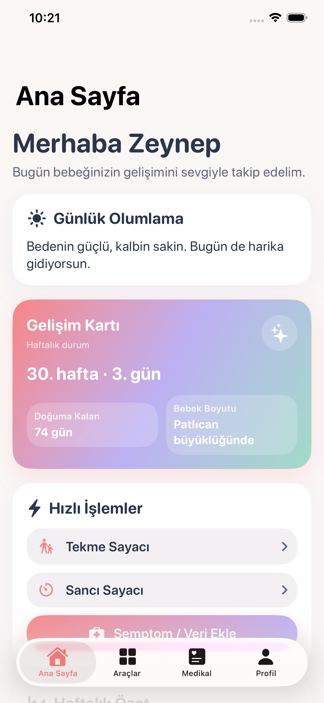
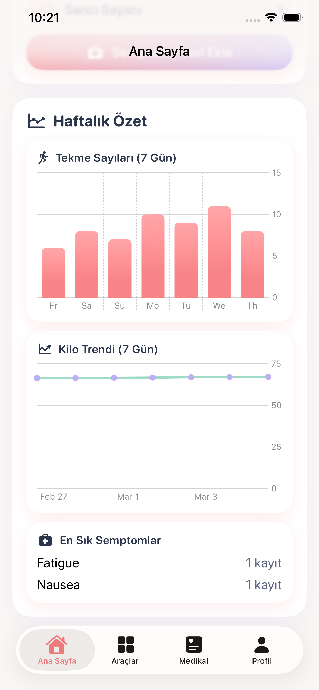
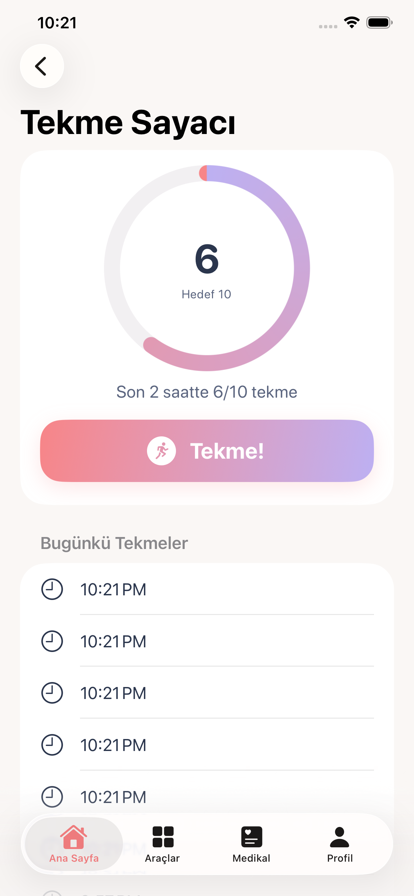
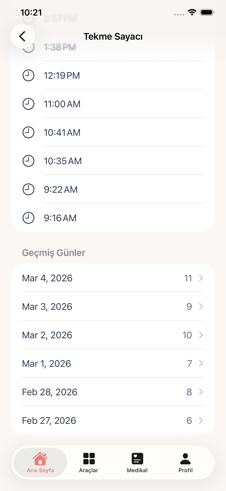
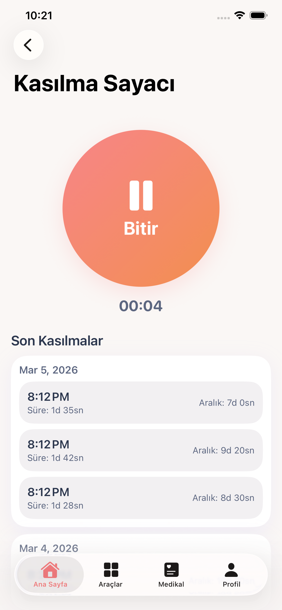
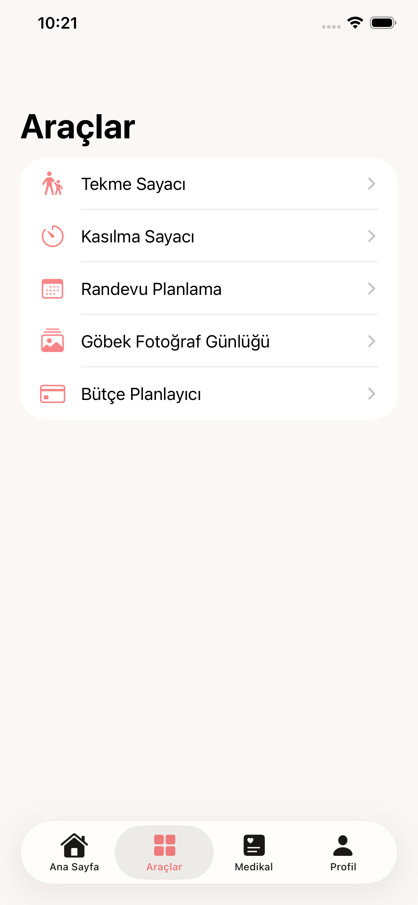
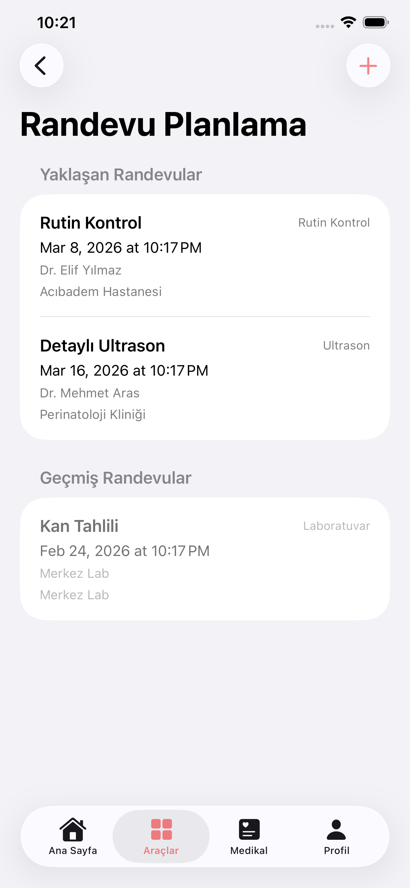
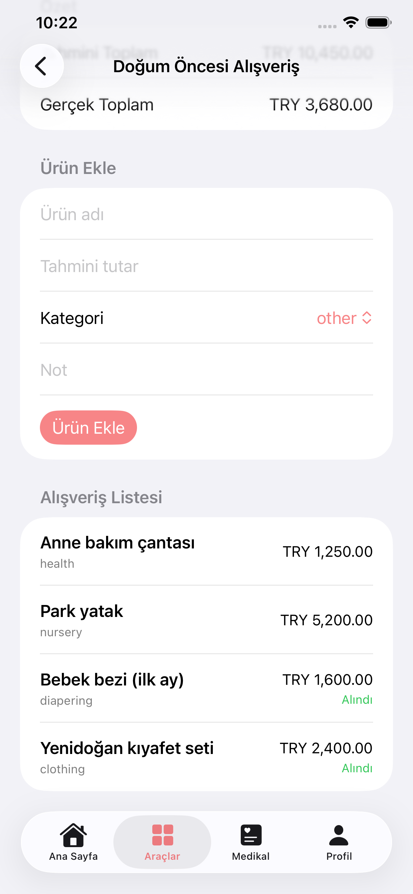
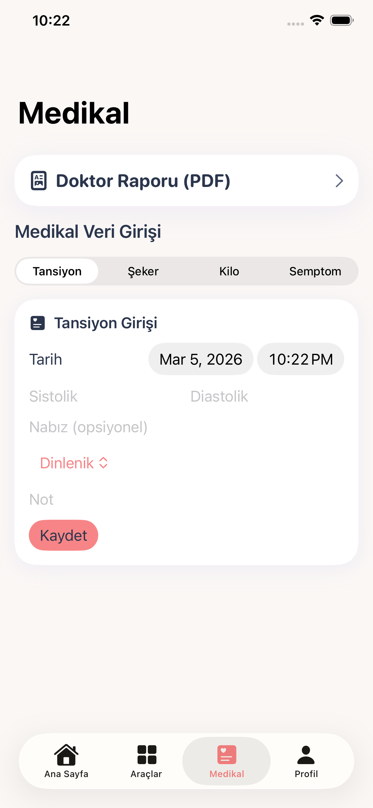

Gebelik Profili
Gebelik bilgilerini ve tahmini doğum tarihini tek yerden takip edin.
iPhone Pregnancy Companion
Randevularınızı planlayın, bebeğin hareketlerini kaydedin, kasılmaları izleyin ve günlük sağlık verilerinizi düzenli şekilde takip edin.
PıtPıt Gebelik, gebelik sürecindeki günlük takibi kolaylaştırmak için tasarlanmış bir mobil yardımcı uygulamadır. Randevu planlama, semptom takibi, tansiyon ve kan şekeri kayıtları, kilo takibi, bebeğin hareketlerinin kaydı, kasılma zamanlama, fotoğraf günlüğü ve dışa aktarılabilir doktor özeti gibi araçları tek bir deneyimde bir araya getirir.

Modüller
Gebelik bilgilerini ve tahmini doğum tarihini tek yerden takip edin.
Bebeğin hareketlerini kaydedin ve günlük takibi düzenli şekilde görün.
Kasılma başlangıç ve süre bilgilerini zamanlayarak kayıt altına alın.
Doktor kontrollerini ve önemli tarihleri düzenleyin.
Günlük sağlık verilerini tek bir uygulama içinde saklayın ve takip edin.
Göbek fotoğraf günlüğü oluşturun ve gerektiğinde doktorla paylaşılabilir raporlar üretin.
App Screens
Uygulama ekranları; günlük kayıt, zamanlayıcı, medikal girişler ve takip modüllerini App Store tarzında sergiler.








Tıbbi Sınırlar
PıtPıt Gebelik, kullanıcıların kendi sağlık verilerini daha düzenli takip etmesine yardımcı olur. Uygulama tıbbi tanı koymaz, tedavi önermez ve profesyonel sağlık hizmetinin yerine geçmez. Acil durumlarda veya endişe verici belirtilerde doktorunuza ya da acil sağlık hizmetlerine başvurmanız gerekir.
Legal & Support